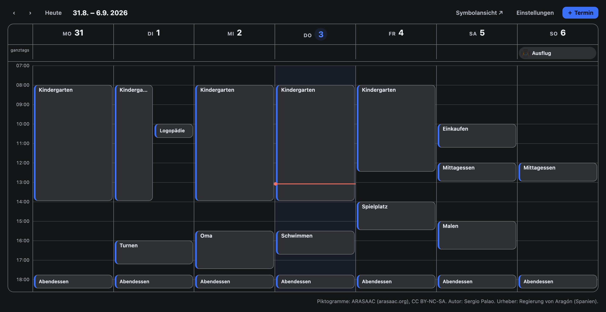
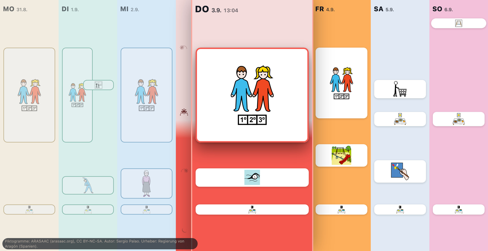

Unterstützte Kommunikation
Lautstark: freie Werkzeuge für Unterstützte Kommunikation.
Meine Tochter benutzt Unterstützte Kommunikation. Für unseren Alltag sind nach und nach vier kleine Programme entstanden: Tafeln für den Talker, Audiodateien für die Geräte, Symbolkarten zum Ausdrucken und die Woche als Bild an der Wand. Sie stehen hier, weil sie vielleicht auch woanders nützlich sind. Alle kostenlos, alle ohne Anmeldung, und nichts davon wird irgendwohin hochgeladen.
 vorlaut
vorlaut
Das Vokabular selbst bauen
Ich wollte die Tafeln für meine Tochter selbst anlegen können, und vor allem ändern können, wenn ihr ein Wort fehlt. Nicht irgendwann, sondern am selben Abend. Dafür ist vorlaut entstanden.
Am Rechner legst du das Raster an, die Seiten und die Wege dazwischen, und zu jeder Taste ein Wort, ein Bild und den Satz, der gesprochen wird. Auf dem Tablet wird daraus die Tafel, die im Alltag in der Hand liegt.
Das ist Arbeit, auch wenn du mit einer fertigen Sammlung anfängst und sie nur umbaust. Bei uns hat es sich gelohnt: „nochmal“ liegt da, wo meine Tochter danach greift, und nicht auf Seite vier unter „Verben“.


- Zwei Teile
- Der Editor läuft im Browser, dort entsteht das Vokabular. Die Android-App zeigt es auf dem Tablet. Dazwischen liegt eine Datei, und die gehört dir.
- Nichts verstellt sich
- In der App lässt sich nichts bearbeiten. Das war Absicht: Ein Tablet, das den ganzen Tag herumgereicht wird, soll abends noch dieselben Tafeln zeigen wie morgens.
- Die Bilder
- Die Bilder von ARASAAC sind eingebaut und kosten nichts; du suchst direkt im Programm danach. Wer METACOM gekauft hat, wählt stattdessen den eigenen Ordner aus.
- Die Stimme
- Mehrere Stimmen sind dabei, du suchst dir eine aus. Weitere lassen sich nachrüsten.
Beta: Editor und App laufen hier jeden Tag. Bei Google Play liegt die App noch nicht, du installierst sie von Hand; das Tablet fragt beim ersten Mal einmal nach.
 mitreden
mitreden
Überall dieselbe Stimme
Meine Tochter spricht nicht über ein Gerät, sondern über mehrere: die Talker-App auf dem Tablet, den Vorlesestift am Bilderbuch, einzelne Sprechtasten. Jedes bringt seine eigene Stimme mit. Derselbe Satz klang dann jedes Mal nach jemand anderem, und ihr fiel das auf, bevor es mir auffiel.
In mitreden tippe ich den Satz einmal ein und bekomme eine Audiodatei zurück. „Ich bin dran“ klingt auf der Sprechtaste seitdem genauso wie im Vorlesestift, weil überall dieselbe Aufnahme liegt.

- Eine Stimme
- Die Stimme gehört zur Sammlung, nicht zum einzelnen Satz. Gefällt dir später eine andere besser, nimmt mitreden alles damit neu auf, und es passt wieder zusammen.
- Fertige Dateien
- Du lädst die Aufnahmen herunter und kopierst sie auf das Gerät, das sie abspielen soll. Danach braucht es kein Internet mehr.
- Für den Anybook-Stift
- Der Bogen kommt fertig heraus: jeder Aufkleber schon an seinen Satz gebunden, als Projekt, das Anybook Studio öffnet. Nummerieren und Zuordnen von Hand entfällt.
- Kein Talker
- mitreden spricht für niemanden. Es ist die Werkstatt dahinter: Text hinein, Aufnahmen heraus.
Beta: Gesprochen wird auf deinem eigenen Rechner, kein Satz wird irgendwohin geschickt. Dafür lädt die Stimme beim ersten Mal eine größere Datei herunter, danach nie wieder. Für welche Geräte es Aufnahmen gibt, hängt daran, was gebraucht wird.
 bildhaft
bildhaft
Viele Karten auf einmal
Symbolkarten braucht man selten einzeln. Man braucht dreißig, weil ein Bilderbuch dreißig Zeilen hat oder weil eine ganze Gruppe welche bekommen soll. Eine Weile habe ich das von Hand gemacht: Symbol suchen, einsetzen, ausrichten, drucken, schneiden, laminieren.
In bildhaft tippe ich die Zeilen einfach untereinander. Aus „Ich möchte einen Apfel essen“ werden vier Bilder mit Beschriftung, aus dreißig Zeilen dreißig Streifen. Was danach bleibt, ist nachbessern, nicht bauen.

- Du hast das letzte Wort
- Zu jedem Wort schlägt bildhaft ein Symbol vor. Passt es nicht, nimmst du ein anderes, und deine Wahl bleibt gespeichert. Beim nächsten Mal steht sie schon da.
- Zum Drucken
- Satzstreifen für ganze Zeilen, Kartenbögen für einzelne Wörter. Beides geht direkt in den Drucker.
- Die Bilder
- Die Bilder von ARASAAC sind eingebaut. Wer METACOM gekauft hat, wählt stattdessen den eigenen Ordner aus.
Beta: Gebaut für den Rechner, an dem auch der Drucker steht. Auf dem Telefon ist die Ansicht noch nicht eingerichtet.
 wochenwerk
wochenwerk
Die Woche sehen, ohne lesen zu können
Meine Kinder können noch nicht lesen, also können sie auch keinen Kalender lesen. Ihre Woche erfuhren sie nur über uns: Sie fragten, wir antworteten, und eine halbe Stunde später fragten sie wieder. Ob heute Schwimmen ist, ob Oma kommt, ob morgen wieder Kita ist, das lag alles bei den Erwachsenen.
wochenwerk hängt die Woche in Bildern an die Wand. Sieben Spalten, jeder Termin eine Karte mit seinem Symbol. Der heutige Tag ist der breiteste, was vorbei ist wird blass, was gerade läuft hebt sich ab. Sie gehen jetzt hin und sehen selbst nach.
Geplant wird nicht am Brett, sondern in einem gewöhnlichen Wochenkalender am Rechner. Das Brett ist nur seine Ansicht: Was ich eintrage, hängt binnen einer Minute an der Wand.


- Zwei Ansichten
- Der Kalender für die Erwachsenen, das Brett für die Kinder. Beide zeigen dieselben Termine, und am Brett lässt sich nichts verstellen.
- Wann, ohne Uhr
- Morgens, mittags, nachmittags und abends stehen als kleine Zeichen neben dem heutigen Tag. Wer die Uhr noch nicht liest, kann trotzdem einordnen, ob etwas gleich kommt oder erst nach dem Mittagessen.
- Wie lang, sieht man
- Die Höhe einer Karte sagt, wie lange etwas dauert. Der lange Vormittag in der Kita sieht anders aus als die dreiviertel Stunde Logopädie danach, und man sieht, wie viel vom Tag noch übrig ist.
- Die Bilder
- Ohne eigenen Ordner nimmt wochenwerk die Bilder von ARASAAC, so wie auf den Bildern oben. Wer METACOM gekauft hat, wählt seinen eigenen Ordner aus; die Bilder bleiben dabei auf dem Rechner.
Beta: Das jüngste der vier und das am wenigsten erprobte. Es hängt bisher an einer Wand, meiner. Wer einen eigenen METACOM-Ordner benutzen will, braucht dafür Chrome oder Edge an einem Rechner; sonst genügt jeder Browser. Fertige Sammlungen gibt es dafür noch nicht.
Zum Anfangen
Fertige Sammlungen
Ein leeres Raster ist ein schwerer Anfang. Deshalb liegen im Regal ein paar Sammlungen, die schon gebaut sind: für die vorlaut-App, für mitreden und für bildhaft. Herunterladen, einlesen, umbauen, bis es passt.
Nach Produkt gefiltert und durchsuchbar. Alles darin ist kostenlos und darf verändert werden.
Gemeinsam
Was für alle vier gilt
- Im Browser
- Seite aufrufen und loslegen. Es gibt nichts zu installieren, nichts anzumelden und nichts zu bezahlen.
- Auf deinem Gerät
- Alles, was du anlegst, bleibt auf deinem Gerät und in den Dateien, die du selbst sicherst. Es liegt nirgendwo im Internet, und ich sehe nichts davon.
- Quelloffen
- Der Programmcode liegt offen und darf von jedem benutzt, verändert und weitergegeben werden. Wenn dir etwas fehlt, sag Bescheid oder bau es selbst ein.
- Noch Beta
- Alle vier sind jung. Ich baue weiter daran, weil wir sie selbst benutzen. Was als Nächstes kommt, entscheidet sich meist daran, was uns gerade fehlt, oder wovon ich höre.
Woher das kommt
Warum es das überhaupt gibt
Ich bin keine Firma und verkaufe nichts. Ich baue diese Programme für meine Kinder, und ich stelle sie offen ins Netz, weil andere Familien vor denselben Fragen sitzen. Wenn eines davon jemandem den Alltag mit Unterstützter Kommunikation leichter macht, hat es seinen Zweck erfüllt.
Es gibt keine Förderung dahinter und keinen Plan, etwas daraus zu machen. Wenn dir etwas fehlt oder etwas kaputt ist, schreib mir: steffi@lautstark.tech.